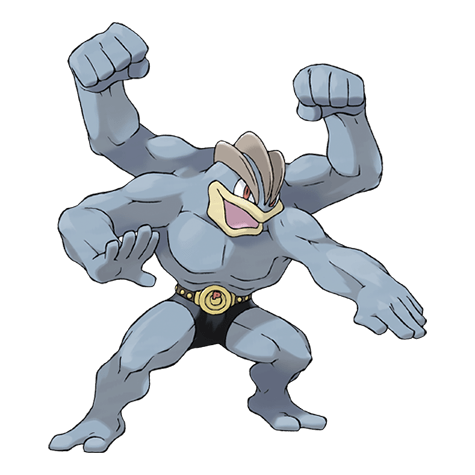

Назад
Мачамп

Мачамп — Покемон 1 поколения под номером 68 в Покедекс. Обитает он в регионе Канто и относится к Боевому типу. Это последняя, третья, стадия эволюции Покемона Мачоп. Мачамп настолько силён, что может отбросить что угодно. Однако при попытке выполнить любую работу, требующую осторожности и сноровки, у него запутываются руки. Этот Покемон, как правило, начинает действовать раньше, чем думает.
Тип:
Боевой
Эволюция
# 068 Мачамп
Финальная стадия